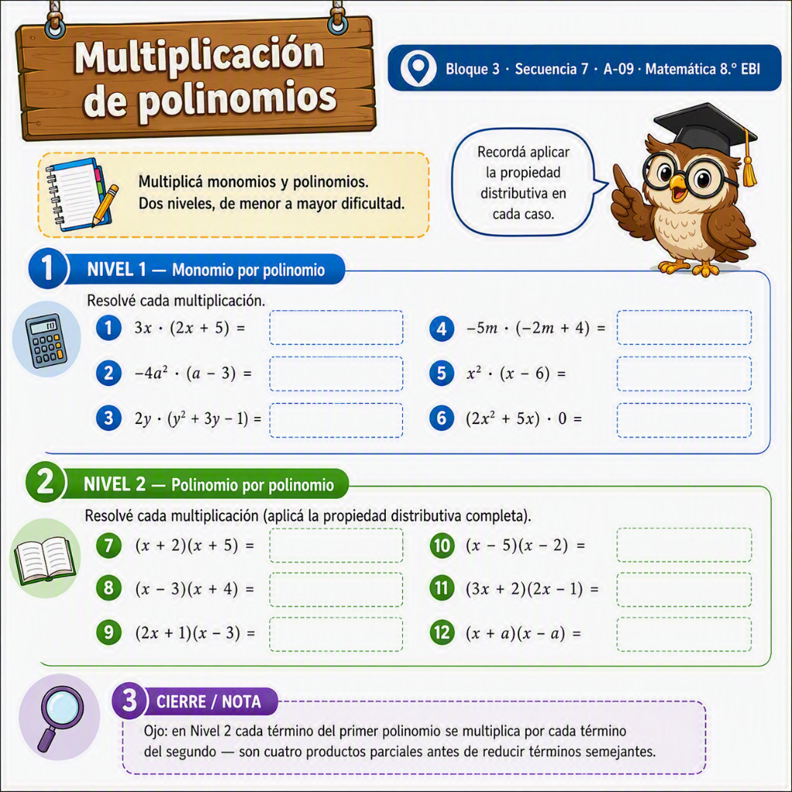

Reino Matemático · Secuencia 7 / A-09
Actividad de práctica — Nivel 1
Resolvé cada suma o resta. Los términos semejantes son fáciles de identificar.
1(3x + 5) + (2x + 1) =
2(7a − 3) − (2a − 1) =
3(4y + 6) + (−y + 2) =
4(−5m + 4) − (3m − 4) =
5(2x² + 3x) + (x² − x) =
6(6b − 2) − (6b − 2) =
Nivel 2
Un poco más de términos y de signos para controlar. Fijate bien antes de restar.
7(5x² − 3x + 2) + (−2x² + 4x − 5) =
8(8m³ + 2m − 1) − (3m³ − 5m + 4) =
9(−4a² + 7a − 6) + (4a² − 7a + 6) =
10(6y³ − 2y² + y) − (y³ + 2y² − y) =
11(3p² − 5pq + q²) + (−p² + 2pq − 3q²) =
12(7n − 3) − (2n + 5) − (n − 1) =
Nota docente
Ojo: en algunos ítems, el resultado de sumar o restar puede ser el polinomio nulo (0). Antes de restar, acordate de que el signo menos afecta a todos los términos del polinomio que sigue — ese es el error más frecuente en este tipo de ejercicios.
Hoja ilustrada

Versión ilustrada para completar a mano, con el mismo contenido verificado arriba.
Fernández, G. M. (2026). Refuerzo de suma y resta de polinomios — Secuencia 7. Reino Matemático. Elaboración propia; se conserva la lógica de práctica graduada en dos niveles de dificultad, inspirada en el enfoque de refuerzo de Porras, M. (2024), Matemática 8, Publicaciones Porras, pág. 102-103, sin reproducir sus ejercicios.
Licencia CC BY-NC-SA 4.0 — se permite compartir y adaptar citando autoría, sin fines comerciales.